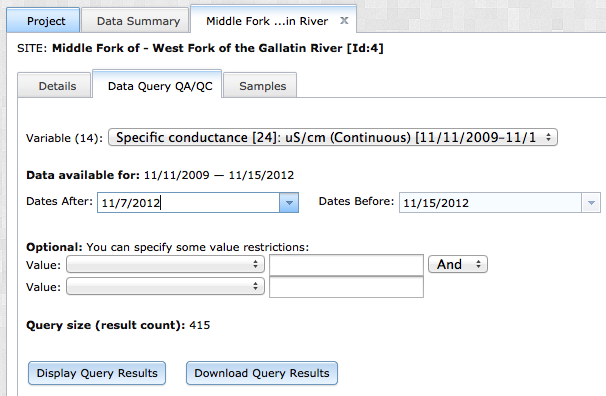
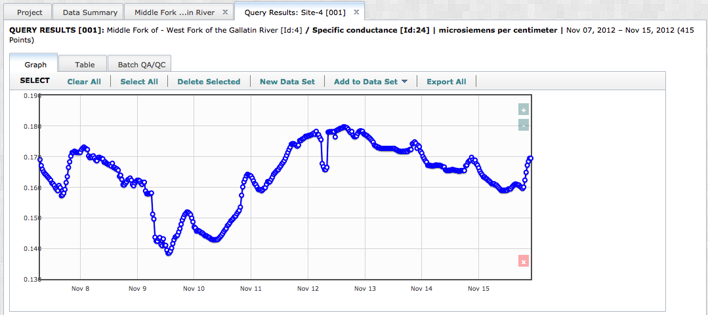
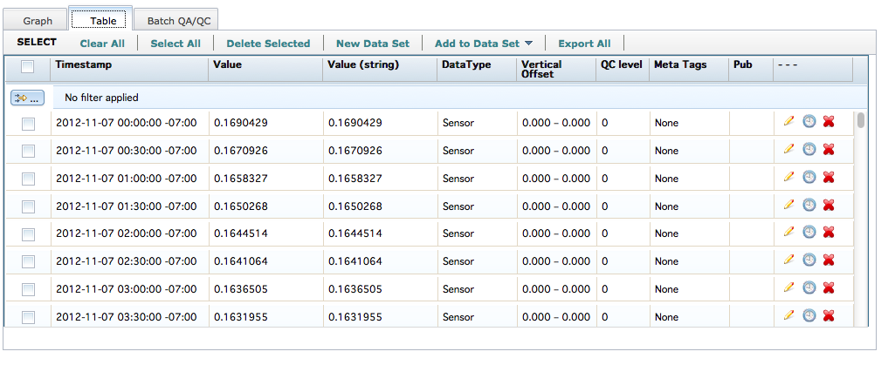
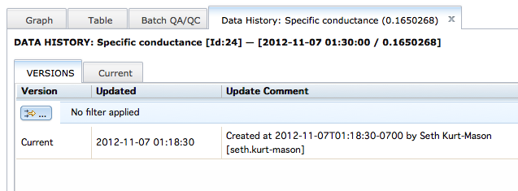
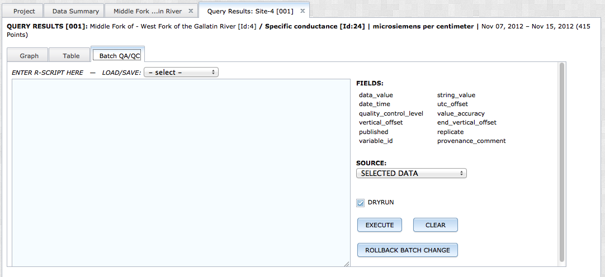
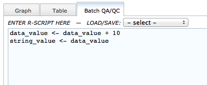
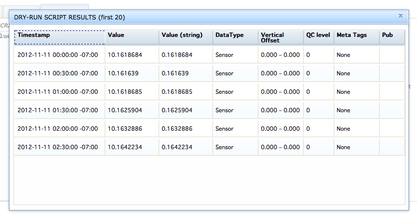

Data must undergo quality assurance and quality control procedures before users can use it confidently for analysis or site characterization. Many data archiving systems require users to complete QAQC procedures prior to data upload. This separate step forces users to utilize separate pieces of software for data editing and storage. VOEIS provides a more parsimonious solution. VOEIS users with the appropriate permissions are able to query data and edit individual values along with their associated metadata. VOEIS also provides batch-edit capabilities for users comfortable with scripting in R.
Manual QAQC
To begin you must query some data using the Simple Data Search workflow. Navigate to the (Project_Show) page of the project you are interested. Remember, you will only be able to query and QAQC data from projects where you have the appropriate access permissions. Open the (Project_Show) page by selecting the project name from the Projects dropdown menu.

In the (Project_Show) page with the Data_Summary tab open, select the site you are interested in. The (Site_Name) tab will open. Select the option: "DATA QUERY QA/QC" from the options at the top of the page.

You will be directed to a tab where you will define your query. You need to select a variable from the dropdown list, and a date range you are interested in. When you are finished, click "Display Query Results".

A new tab will open with your query results. The interactive graphing widget on this tab allows you to select one or more data values, which are then highlighted in the table view of the data. The (+/-) buttons on the top right of the graph allow users to modify the zoom/extent of the graph. Click the 'Table' tab to see a data grid containing all of the data values that were returned by your query. You can filter the values that appear in the table by clicking the small button with the yellow arrow located in the upper left. This button calls the pop-out window below. Custom filtering rules are described using Boolean logic and applied to either a single column or multiple columns.

Take notice of the icons located in each row in the last column. Click these icons to edit individual data values, view provenance information, or delete values.

A note about the string_value field: The string_value field is used in the VOEIS data model to store values that consist of a non-numeric character (e.g. >, <, etc.). To accomodate this occurance, data values uploaded to VOEIS are stored as both a numeric value and a string value in most cases. When the uploaded value contains a non-numeric character, the value is saved as a string value only and the data_value field recieves the no_data_value defined during data upload.
To edit a data value, click on the pencil icon in the corresponding row. You will see a dialog box containing all of the information associated with the data value that can be edited in this workflow. Make the changes required and click the "Save Data Value" button to close the dialog box.

Your data value is now updated. To observe your changes, click on the clock icon in the row that contains the data value. A new tab will open, displaying the provenance information associated with the data value. Click on the various tabs to review all of the versions. You can roll the data value back to any of the previous versions at any time by selecting the "Rollback Version" button in the version tab that contains the correct data value information.

If the data set contains erroneous values, you can delete them by clicking on the red "X" in the corresponding row in the data grid. You may also conduct a batch delete by selecting multiple values in either the table or graph view, then clicking "Delete Selected" from the toolbar. This change cannot be undone, so use it cautiously.
Batch QAQC
VOEIS provides users with a batch QAQC tool for users familiar with the R statistical computing language. The first step when conducting a batch QAQC action, is to select the values that will be included in the batch run. Return to the Graph or Table views of the data. Select multiple values in the Graph view by holding down the Shift key and clicking the values of interest. Select values from the Table view by clicking the checkboxes in the corresponding rows. After you select the data values you would like to QAQC programatically, click the 'Batch QA/QC' tab.

Begin by defining the data you want to include in your batch run by selecting an option from the 'Source Data' dropdown. The variables available for use in the R-script are listed in the top right of the tab window. The variables and their expected type in VOEIS are listed below:
Variable |
Type |
data_value |
float |
date_time |
PostgreSQL datetime |
quality_control_level |
float |
vertical_offset |
float |
published |
boolean (true/false) |
variable_id |
integer |
string_value |
string |
utc_offset |
float |
value_accuracy |
float |
end_vertical_offset |
float |
replicate |
string |
provenance_comment |
string |
A note about the string_value field: The string_value field is used in the VOEIS data model to store values that consist of a non-numeric character (e.g. >, <, etc.). To accomodate this occurance, data values uploaded to VOEIS are stored as both a numeric value and a string value in most cases. When the uploaded value contains a non-numeric character, the value is saved as a string value only and the data_value field recieves the no_data_value defined during data upload.
Use R syntax to compose a script that will be applied recursively to each row in your selection. Note: you do not need to define the looping function, VOEIS does this for you, only the function that you would like applied to each row individually. A simple example is applied below.

This function will add ten to each selected data value, then it will update the string_value to equal the new data_value. Updating the string_value in this way is recommended for any function that modifies the data_value. To execute the function, click the 'Execute' button. If you would like to see what your changes look like before making them permenant in VOEIS, check the "DRYRUN" checkbox. When this is checked, the resutls from the batch QAQC will be displayed in a dialog box. If the results are acceptable, close the dialog box, un-check the "DRYRUN" checkbox, and click the 'Execute' button again.

Due to the processing time required to apply the described function to each row in your selection, it is recommended that selections for batch processing consist of fewer than 100 values. If you execute a batch run and quickly realize that you made a mistake in your function, you may rollback all changes that the batch process made by clicking the 'Rollback Batch Change' button. It is not neccessary to use this button to reverse DRYRUN changes, as these are not saved to the VOEIS database. If you apply changes to data values using the batch processing tool and realize at a later date that these changes were incorrect, you will need to rollback the changes to each value individually using the steps described in the Manual QAQC section.
Created with the Personal Edition of HelpNDoc: Easily create Help documents